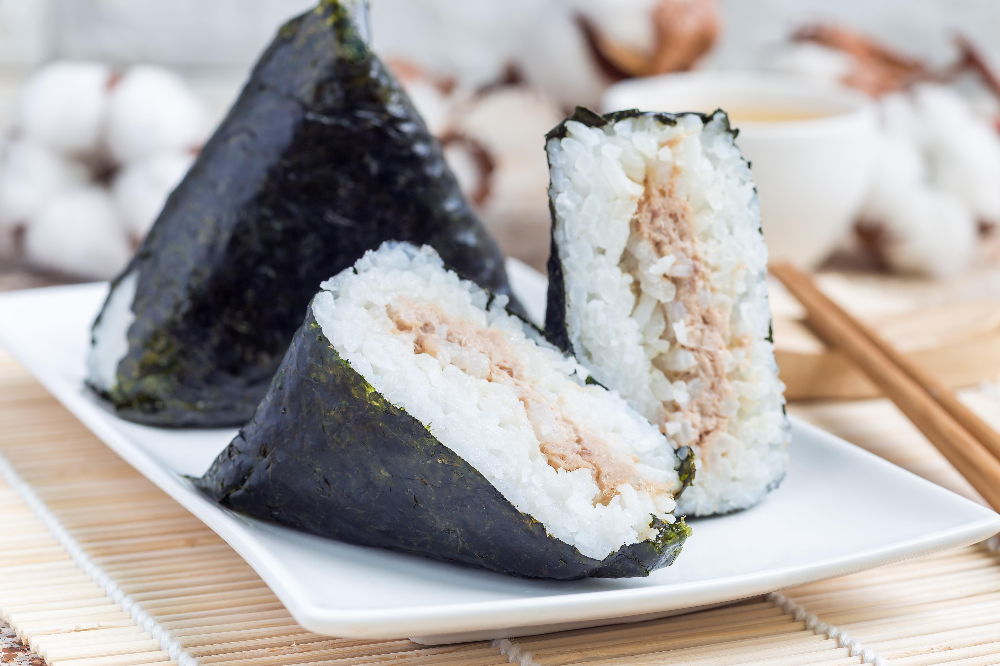
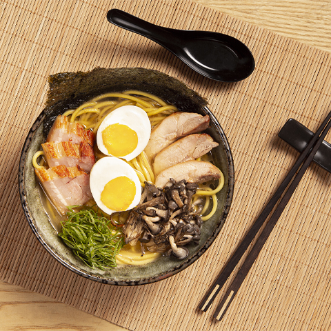
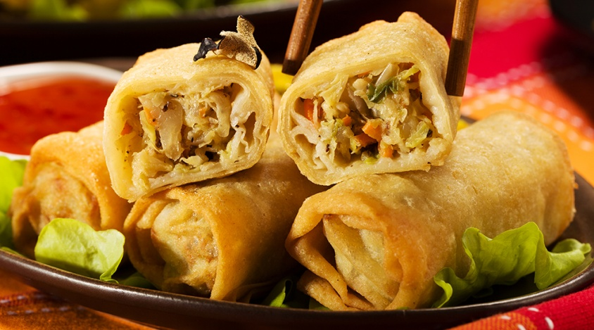

Culinaria Japonesa
Comidas
Sushi
O sushi é um prato tradicional da culinária japonesa, conhecido por sua combinação de arroz temperado com vinagre, peixe fresco e outros ingredientes. Existem várias variedades, como nigiri (bolinho de arroz com peixe por cima) e maki (rolos de arroz e recheios envoltos em alga). O sabor delicado do sushi é frequentemente realçado com acompanhamentos como wasabi, shoyu e gengibre em conserva. A apresentação do prato é uma parte importante da experiência, refletindo a estética japonesa. Além de ser uma iguaria deliciosa, o sushi também é apreciado por seu valor nutricional e frescor.

Onigiri
O onigiri, também conhecido como bolinho de arroz, é um prato típico japonês feito com arroz cozido moldado em forma triangular ou oval. Geralmente, é recheado com ingredientes como peixe, umeboshi (ameixa em conserva) ou alga nori. É uma opção prática e saborosa, popular como lanche ou refeição rápida, frequentemente encontrada em bentôs. O onigiri pode ser servido em várias versões, incluindo aquelas temperadas com gergelim ou cobertas com alga. Além de ser nutritivo, é um símbolo de conforto e tradição na culinária japonesa.

Lámen
Lámen é um prato tradicional japonês que consiste em noodles de trigo servidos em um caldo saboroso. O caldo pode ser à base de carne, peixe ou vegetais, muitas vezes enriquecido com molho de soja ou missô. Os noodles são geralmente longos e elásticos, perfeitos para serem slurpados. O prato é frequentemente guarnecido com fatias de carne de porco (chashu), ovos cozidos, cebolinha e nori. Cada região do Japão tem sua própria variação, com diferentes estilos de caldo e acompanhamentos. A apresentação é cuidadosa, transformando cada tigela em uma obra de arte. O lámen é uma experiência reconfortante e deliciosa, popular tanto no Japão quanto internacionalmente.

Harumaki
Harumaki é um tipo de rolinho primavera popular na culinária japonesa. Consiste em uma massa fina e crocante, geralmente recheada com vegetais, carne ou frutos do mar. Após ser enrolado, o harumaki é frito até dourar, resultando em uma textura crocante por fora e macia por dentro. É frequentemente servido como entrada em refeições, acompanhado de molhos como o de soja ou agridoce. Suas variações permitem variações no recheio, adaptando-se a diferentes preferências